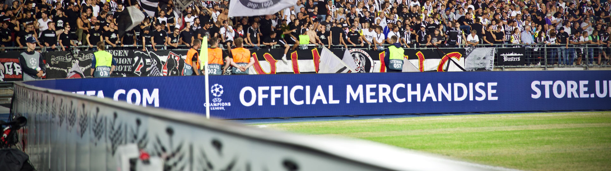

NEMEZES
All-Weather Reliability

NEMEZES ist ein vollständig geschlossenes UEFA-zertifiziertes High-End-LED-System für professionelle Outdoor-Sportanwendungen. Hohe Helligkeit, grosse Betrachtungswinkel, flimmerfreie Darstellung sowie eine redundante Signal- und Stromversorgung bilden die Grundlage für einen zuverlässigen Betrieb. Seit mehr als zehn Jahren gewährleistet das System zuverlässig lesbare Inhalte für Stadionpublikum, TV-Übertragungen, High-und Hyper-Speed-Kameras und Sportfotografie.
Eine energieeffiziente Systemarchitektur reduziert den Stromverbrauch im laufenden Betrieb.
Gleichzeitig sorgen langlebige Komponenten, eine servicefreundliche Konstruktion und ein hoher Anteil recyclingfähiger Kernmaterialien für einen verantwortungsvollen Umgang mit Ressourcen. Das System ist für eine Betriebsdauer von mehr als zehn Jahren ausgelegt.
NEMEZES lässt sich modular als LED-Perimeter, Fasziaboard, Screen oder Scoreboard einsetzen.
Schnelle Installation, werkzeuglos demontierbare Komponenten, Hot-Plug-Service und die integrierte Vorbereitung für virtuelle Werbung ermöglichen einen flexiblen, nachhaltigen und zukunftssicheren Betrieb.
Key Features
Key Features – NEMEZES
- Seit 2016 UEFA-zertifiziertes High-End-LED-System
- Für Festinstallationen und Vermietungssysteme
- Spezialkonstruktion für eine optimale Darstellung der Werbefläche im TV-Kamerabild
- Magnesium-Aluminium-Druckgussgehäuse
- Vollständig geschlossenes Outdoor-System
- Hohe Helligkeit und Kontrast, extrem grosser Betrachtungswinkel
- Flimmerfreie Darstellung für TV sowie High- und Hyper-Speed-Kameras
- Circle Cabinet Power Management Structure
- Redundante Signal- und Stromversorgung
- Energieeffiziente Systemarchitektur
- Modular als LED-Perimeter, Fasziaboard, Screen oder Scoreboard einsetzbar
- Ultraschneller Auf- und Abbau des Systems
- Hot-Plug-Service für superschnelle Fehlerbehebung während des Events
- Exit-/Access-Gates
- Kurven-Panels für ein geschlossenes Bild bei TV-Übertragung (somit grössere Werbefläche)
- Vorbereitet für virtuelle Werbung
- 10 Jahre Garantie